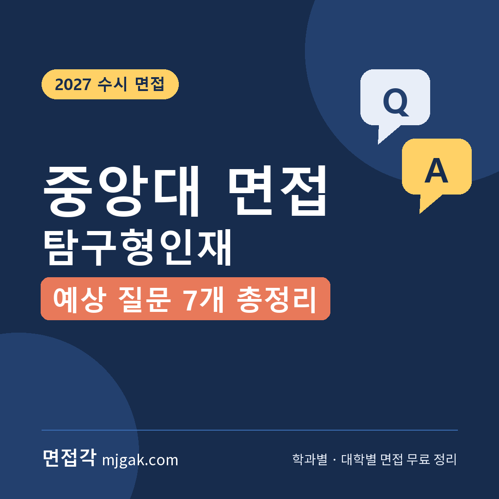
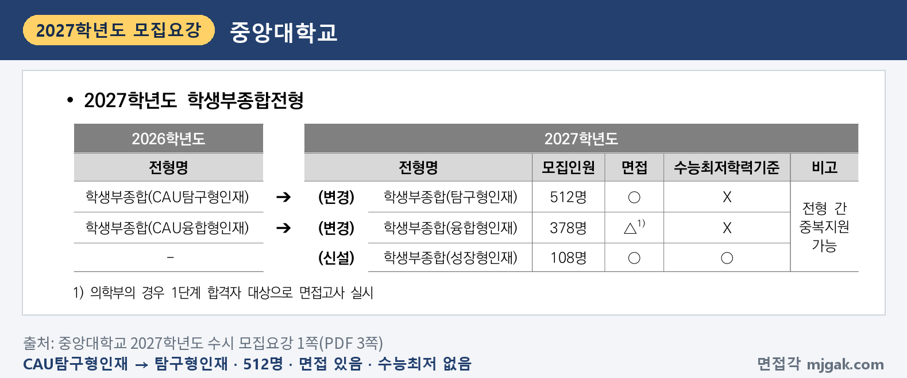
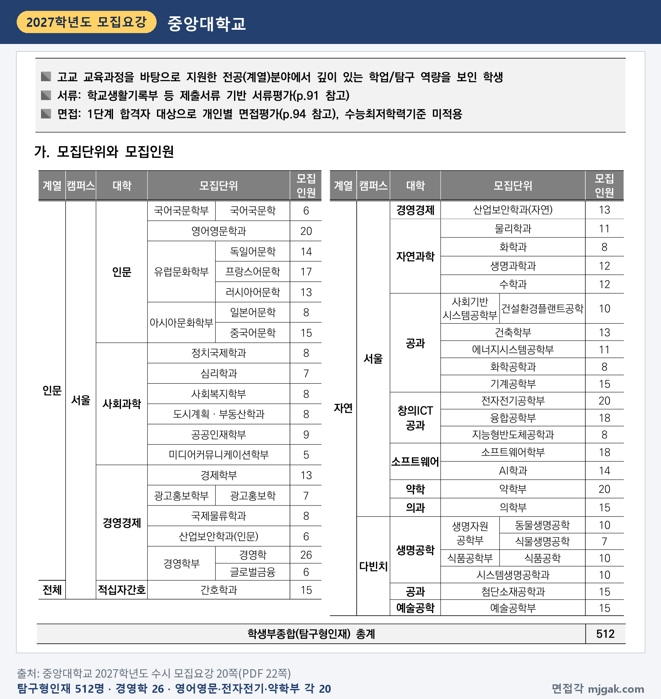
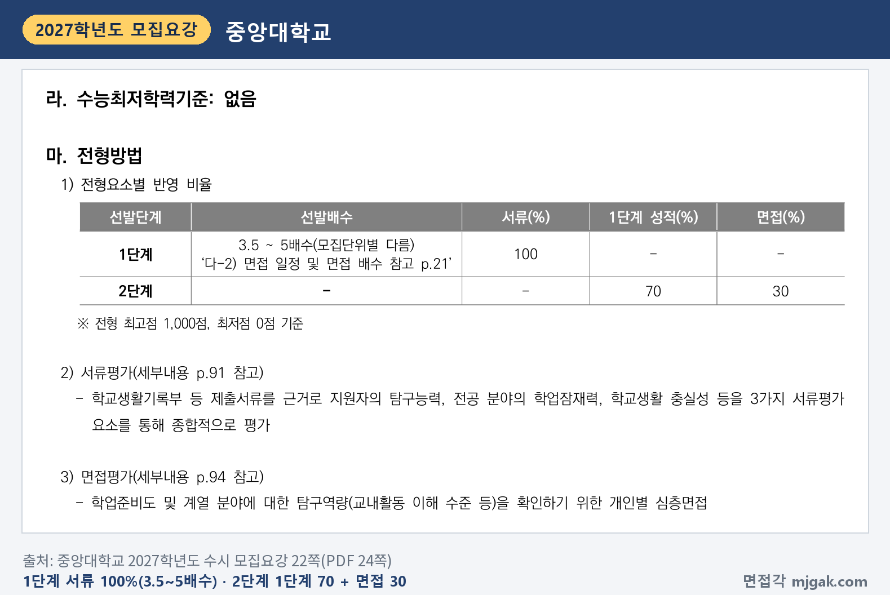
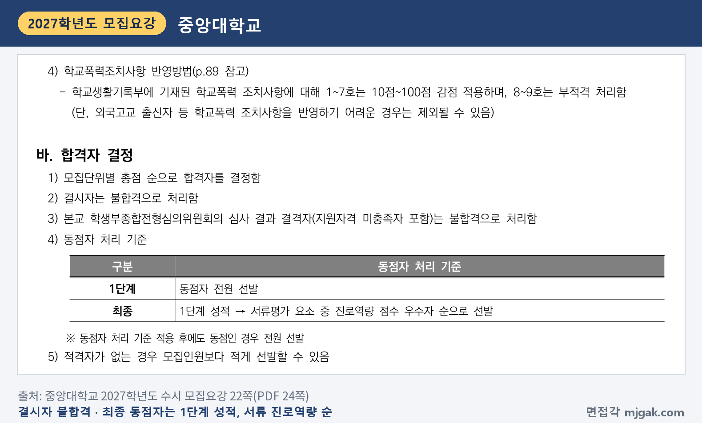
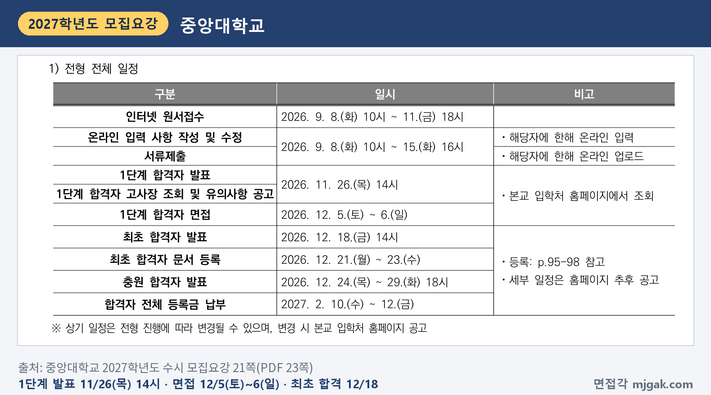
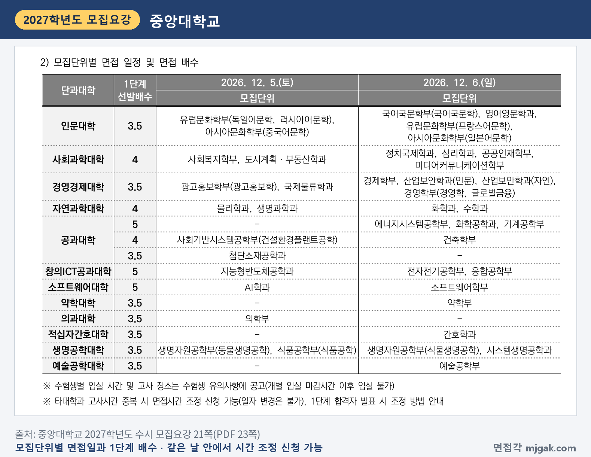
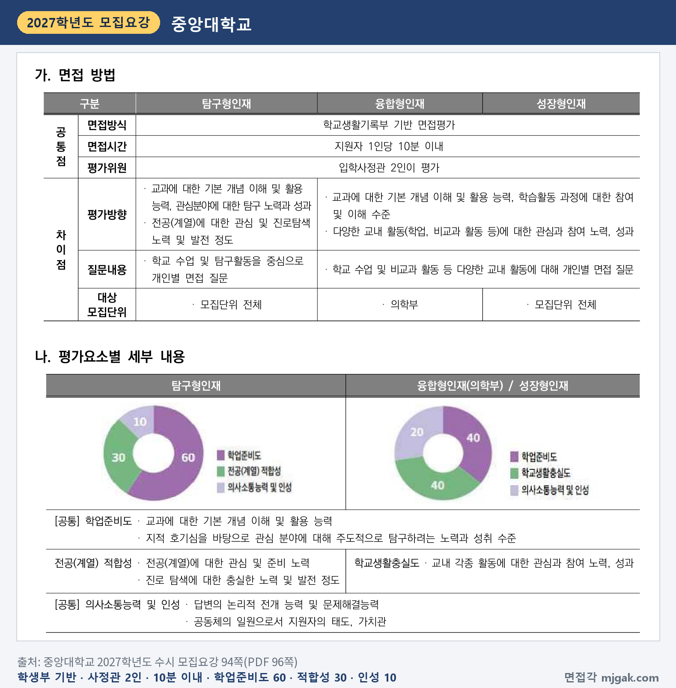
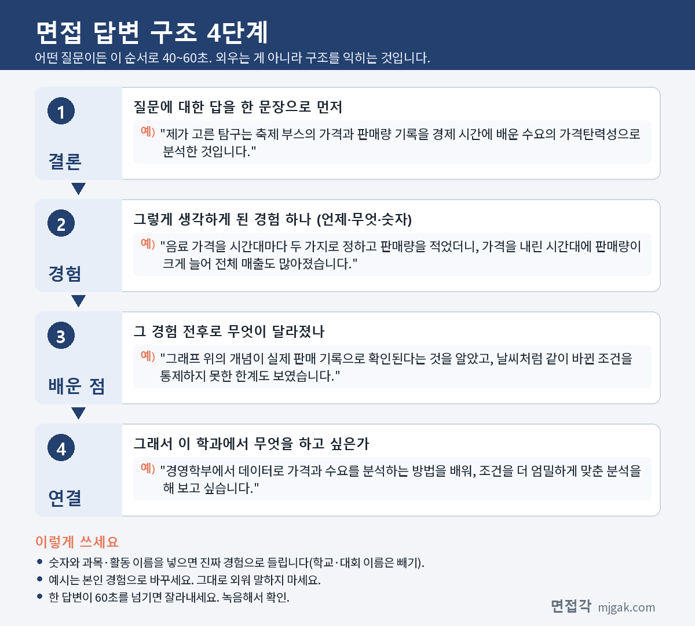

Ctrl+V (서식 유지됨)제목
본문 (이 영역 전체가 복사됩니다)
📷 여기에 이미지 넣기 — 썸네일 — thumb-cau-tam.png (대표 이미지로 지정)
중앙대 탐구형인재전형 면접에서 먼저 알아 둘 것은 평가의 60%가 '학업준비도'라는 점입니다. 모집요강은 면접의 평가 방향을 "교과에 대한 기본 개념 이해 및 활용 능력"으로 시작하고, 질문은 "학교 수업 및 탐구활동을 중심으로" 한다고 적었습니다. 학생부에 적힌 탐구를 소개하는 데서 끝나지 않고, 그 탐구에 쓴 교과 개념을 설명할 수 있어야 한다는 뜻입니다. 1단계 합격자 발표는 수능 일주일 뒤인 11월 26일(목) 오후 2시이고, 면접은 12월 5일(토)과 6일(일)에 모집단위별로 나뉩니다. 이 글은 중앙대 2027학년도 수시 모집요강으로 전형 방법·일정·면접 방식, 예상 질문 7개와 답변법, 준비 순서를 정리했습니다. 탐구형인재에 지원한 고3과 재수생이 읽으시면 됩니다.
1. 탐구형인재, 2027학년도에는 어떻게 보나
탐구형인재는 학생부종합전형으로 512명을 뽑습니다. 2026학년도 'CAU탐구형인재'에서 '탐구형인재'로 이름이 바뀌었고, 면접이 있으며 수능최저학력기준은 없습니다. 같은 학생부종합인 융합형인재(378명), 새로 생긴 성장형인재(108명)와 전형 간 중복지원이 가능합니다(1쪽).
📷 여기에 이미지 넣기 — 캡처 1 — 중앙대학교 2027학년도 수시 모집요강 1쪽(PDF 3쪽): cau-2027-tam-change.png
모집요강이 밝힌 인재상은 "고교 교육과정을 바탕으로 지원한 전공(계열)분야에서 깊이 있는 학업/탐구 역량을 보인 학생"입니다(20쪽). 인원이 많은 곳은 경영학부 경영학전공 26명, 영어영문학과·전자전기공학부·약학부 각 20명, 융합공학부·소프트웨어학부 각 18명, 유럽문화학부 프랑스어문학전공 17명입니다(20쪽). 검정고시 출신과 외국고 출신도 지원할 수 있습니다(3쪽).
📷 여기에 이미지 넣기 — 캡처 2 — 중앙대학교 2027학년도 수시 모집요강 20쪽(PDF 22쪽): cau-2027-tam-units.png
전형 방법은 1단계에서 서류평가 100%로 모집단위별 3.5~5배수를 뽑고, 2단계에서 1단계 성적 70%와 면접 30%를 합산합니다. 최고점은 1,000점입니다(22쪽). 배수는 단과대학마다 다릅니다. 인문·경영경제·약학·의과·적십자간호·생명공학·예술공학대학은 3.5배수, 사회과학·자연과학대학은 4배수, 창의ICT공과·소프트웨어대학은 5배수입니다. 공과대학은 에너지시스템공학부·화학공학과·기계공학부가 5배수, 건설환경플랜트공학전공·건축학부가 4배수, 첨단소재공학과가 3.5배수입니다(21쪽).
모집요강에 적힌 숫자가 아니라 모집인원에 배수를 곱해 계산한 값으로, 경영학전공(26명, 3.5배수)은 91명, 전자전기공학부(20명, 5배수)는 100명이 1단계 합격 규모입니다. 1단계 동점자는 전원 선발하므로(22쪽) 실제 인원은 이보다 많을 수 있습니다.
📷 여기에 이미지 넣기 — 캡처 3 — 중앙대학교 2027학년도 수시 모집요강 22쪽(PDF 24쪽): cau-2027-tam-method.png
면접 결시자는 불합격입니다. 최종 동점자는 1단계 성적, 서류평가의 진로역량 점수 순으로 가리고, 그래도 같으면 전원 선발합니다(22쪽). 학생부에 학교폭력 조치사항이 있으면 1,000점 만점에서 1~3호는 10점, 4~5호는 50점, 6~7호는 100점을 감점하고, 8~9호는 부적격입니다(22·89쪽).
📷 여기에 이미지 넣기 — 캡처 4 — 중앙대학교 2027학년도 수시 모집요강 22쪽(PDF 24쪽): cau-2027-tam-rule.png
2. 언제 보나: 수능 일주일 뒤 1단계 발표, 12월 첫 주말 면접
1단계 합격자 발표와 고사장 조회·유의사항 공고는 모두 11월 26일(목) 오후 2시이고, 입학처 홈페이지에서 조회합니다. 면접은 12월 5일(토)~6일(일), 최초 합격자 발표는 12월 18일(금) 오후 2시입니다(21쪽). 1단계 발표에서 면접까지는 9~10일입니다(이 글에서 계산한 값). 합격 여부는 개별 통보하지 않으니 직접 확인해야 합니다(10쪽).
📷 여기에 이미지 넣기 — 캡처 5 — 중앙대학교 2027학년도 수시 모집요강 21쪽(PDF 23쪽): cau-2027-tam-schedule.png
면접 날짜는 모집단위마다 정해져 있습니다. 전체는 아래 표로 확인하시고, 일부만 골라 묶으면 이렇습니다(21쪽).
- 12월 5일(토): 독일어·러시아어·중국어문학, 사회복지학부, 광고홍보학, 물리학과, 생명과학과, 지능형반도체공학과, AI학과, 의학부 등
- 12월 6일(일): 국어국문·영어영문·프랑스어·일본어문학, 심리학과, 경제학부, 경영학부, 기계공학부, 전자전기공학부, 소프트웨어학부, 약학부, 간호학과 등
같은 단과대학 안에서도 날짜가 갈립니다. 인문대학은 전공마다 다르고, 창의ICT공과대학은 지능형반도체공학과만 12월 5일입니다.
📷 여기에 이미지 넣기 — 캡처 6 — 중앙대학교 2027학년도 수시 모집요강 21쪽(PDF 23쪽): cau-2027-tam-dates.png
수험생별 입실 시간과 고사 장소는 수험생 유의사항으로 공고하고, 개별 입실 마감시간 이후에는 들어갈 수 없습니다. 다른 대학과 고사 시간이 겹치면 면접 시간 조정을 신청할 수 있습니다. 일자 변경은 안 되고, 방법은 1단계 발표 때 안내합니다(21쪽).
3. 면접은 어떻게 보나
면접은 학교생활기록부 기반 면접평가이고, 지원자 1인당 10분 이내로 입학사정관 2인이 평가합니다. 탐구형인재의 질문내용은 "학교 수업 및 탐구활동을 중심으로 개인별 면접 질문"입니다(94쪽). 전형방법에서는 "학업준비도 및 계열 분야에 대한 탐구역량(교내활동 이해 수준 등)을 확인하기 위한 개인별 심층면접"이라고 적었습니다(22쪽).
평가 요소와 비율은 다음과 같습니다(94쪽).
- 학업준비도 60%: 교과에 대한 기본 개념 이해 및 활용 능력, 지적 호기심을 바탕으로 관심 분야에 대해 주도적으로 탐구하려는 노력과 성취 수준
- 전공(계열) 적합성 30%: 전공(계열)에 대한 관심 및 준비 노력, 진로 탐색에 대한 충실한 노력 및 발전 정도
- 의사소통능력 및 인성 10%: 답변의 논리적 전개 능력 및 문제해결능력, 공동체의 일원으로서 지원자의 태도, 가치관
융합형인재(의학부)·성장형인재는 학업준비도가 40%인데, 탐구형인재는 60%입니다(94쪽). 탐구 활동마다 "어떤 교과 개념을 썼는가"를 먼저 정리하세요.
📷 여기에 이미지 넣기 — 캡처 7 — 중앙대학교 2027학년도 수시 모집요강 94쪽(PDF 96쪽): cau-2027-tam-interview.png
서류평가는 학업역량 40%, 진로역량 50%, 공동체역량 10%이고(91쪽), 탐구형인재는 탐구력과 전공(계열) 관련 교과 이수 노력·성취도를 중요하게 평가합니다(92쪽). 면접 질문이 학생부에서 나오니 함께 보세요.
4. 평가 기준에서 나올 예상 질문 7개와 답변법
중앙대는 모집요강에 면접 질문 예시를 공개하지 않았습니다. 아래 7개는 위 평가 요소와 질문 내용을 바탕으로 정리한 예상 질문입니다. "○○" 자리에는 내 학생부의 과목과 탐구가 들어갑니다. 예시 답변은 모집단위를 바꿔 가며 쓴 가상의 예시이니 본인 경험으로 바꾸세요.
▶ 질문 1. 학생부에 적힌 탐구 하나를 골라, 왜 그 주제를 탐구했고 어떻게 진행했는지 말해 보세요. (학업준비도: 주도적 탐구 노력과 성취 수준)
왜 묻나: 학업준비도(60%)의 "주도적으로 탐구하려는 노력과 성취 수준"을 보는 질문입니다.
답변 구조: 탐구 주제와 쓴 개념 한 문장 → 시작한 계기(수업 장면) → 내가 한 방법과 결과 → 알게 된 점과 한계 → 학과 공부와 연결.
답변 예시 (경영학부 경영학, 12월 6일):
"제가 고른 탐구는 축제 부스의 가격과 판매량 기록을 경제 시간에 배운 수요의 가격탄력성으로 분석한 것입니다. 가격을 내렸을 때 판매량이 늘어나는 정도가 상품마다 다르다고 배워, 우리 반 음료도 그런지 궁금했습니다. 음료 가격을 시간대마다 두 가지로 정하고 판매량을 적었더니, 가격을 내린 시간대에 판매량이 크게 늘어 전체 매출도 많아졌습니다. 그래프 위의 개념이 실제 판매 기록으로 확인된다는 것을 알았고, 날씨처럼 같이 바뀐 조건을 통제하지 못한 한계도 보였습니다. 경영학부에서 데이터로 가격과 수요를 분석하는 방법을 배워, 조건을 더 엄밀하게 맞춘 분석을 해 보고 싶습니다."
주의: 탐구 이름만 말하고 넘어가지 말고, 첫 문장에 쓴 교과 개념의 이름을 넣으세요.
▶ 질문 2. 그 탐구에서 쓴 ○○ 개념을 처음 듣는 사람에게 설명하듯 말해 보세요. (학업준비도: 교과에 대한 기본 개념 이해)
왜 묻나: 학업준비도의 첫 세부 내용이 "교과에 대한 기본 개념 이해 및 활용 능력"입니다. 세특에 적힌 개념을 내가 이해한 말로 설명할 수 있는지를 봅니다.
답변 구조: 개념을 한 문장으로 → 쉬운 예 하나 → 내 탐구에서 그 개념을 쓴 곳 → 아직 설명하지 못하는 부분.
답변 예시 (물리학과, 12월 5일):
"단진자의 주기는 추가 한 번 왕복하는 데 걸리는 시간이고, 흔들리는 폭이 작을 때는 줄의 길이와 중력가속도로 정해집니다. 그래서 추의 무게를 바꿔도 주기는 그대로이고, 줄을 네 배로 늘리면 주기는 두 배가 됩니다. 저는 물리 수업 탐구에서 줄 길이를 네 가지로 바꿔 열 번 왕복하는 시간을 재고 10으로 나눠 주기를 구했고, 주기가 길이의 제곱근에 비례하는 것을 그래프로 확인했습니다. 흔들리는 폭을 크게 하면 왜 이 관계가 어긋나는지는 아직 정확히 설명하지 못해서, 물리학과에서 더 공부하고 싶습니다."
주의: 정의를 외우기보다 쉬운 예 하나를 붙이세요. 모르는 부분은 아는 데까지만 말해도 됩니다.
▶ 질문 3. 결과가 예상과 달랐던 부분이 있었나요? 원인은 무엇이고, 다시 한다면 무엇을 바꾸겠습니까? (학업준비도: 개념 활용 능력, 의사소통능력 및 인성: 문제해결능력)
왜 묻나: 개념으로 결과를 해석하는 "활용 능력"과 "문제해결능력"을 함께 봅니다. 모집요강이 "심층면접"이라고 적었으니 앞 답에서 이어지는 꼬리 질문으로 대비하세요.
답변 구조: 예상과 다른 결과 → 원인 후보 → 확인한 방법 → 다시 한다면 바꿀 점.
답변 예시 (화학공학과, 12월 6일):
"화학 수업에서 온도가 높을수록 반응 속도가 빨라진다고 배우고, 물 온도를 바꿔 가며 발포 비타민 정제가 다 녹는 시간을 쟀습니다. 그런데 뜨거운 물에서 두 번째로 잰 시간이 첫 번째보다 오히려 길었습니다. 기록을 다시 보니 두 번째는 물을 따라 두고 몇 분 기다린 뒤 정제를 넣어서, 그사이 물 온도가 내려가 있었습니다. 다시 한다면 정제를 넣기 직전에 온도계로 온도를 재서 적고, 같은 온도에서 세 번씩 반복해 평균을 내겠습니다. 화학공학과에서 반응 조건을 정밀하게 맞추는 방법을 배우고 싶습니다."
주의: "실험이 잘못됐습니다"로 끝내지 말고 바꿀 방법까지 말하세요.
📷 여기에 이미지 넣기 — 이미지 1 — 제미나이 생성: 겨울 햇살이 드는 캠퍼스 라운지에서 동전·막대그래프 모형·진자·비커·뇌 모형·알약 케이스·카메라·청진기 옆에서 답하는 남학생(실사) / "제미나이 프롬프트 1"
▶ 질문 4. 그 탐구의 한계는 무엇이고, 이어서 더 알고 싶은 것은 무엇인가요? (학업준비도: 성취 수준과 탐구 노력)
왜 묻나: 학업준비도의 "성취 수준"과 "주도적으로 탐구하려는 노력"을 봅니다.
답변 구조: 탐구 결과 한 문장 → 나중에 알게 된 한계 → 한계가 생긴 이유 → 이어서 하고 싶은 공부.
답변 예시 (심리학과, 12월 6일):
"저는 친구 40명에게 평균 수면 시간과 수업 중 졸음 정도를 묻는 설문을 했고, 잠을 적게 잘수록 졸음 점수가 높다는 결과를 얻었습니다. 그런데 통계 관련 책을 읽으며 상관관계와 인과관계가 다르다는 것을 알고 나니, 제 결과만으로는 수면 부족이 졸음의 원인이라고 말할 수 없다는 한계가 보였습니다. 늦게까지 휴대폰을 보는 습관처럼 두 가지에 함께 영향을 주는 요인이 있을 수 있기 때문입니다. 심리학과에서 조건을 나눠 비교하는 실험 설계를 배워, 원인을 확인하는 연구를 해 보고 싶습니다."
주의: 한계를 숨기지 말고, 더 공부하고 싶은 것까지 이어서 말하세요.
▶ 질문 5. 지원 전공과 관련해 어떤 과목을 골라 들었고, 그 과목에서 무엇을 얻었나요? (전공(계열) 적합성: 전공(계열)에 대한 관심 및 준비 노력)
왜 묻나: 전공(계열) 적합성(30%)의 첫 세부 내용입니다. 서류평가에서 중요하게 보는 전공 관련 교과 이수 노력과도 이어집니다(92쪽).
답변 구조: 고른 과목 → 고른 이유 → 그 과목에서 배운 개념 하나 → 전공 공부와 연결.
답변 예시 (약학부, 12월 6일):
"약학부를 준비하면서 3학년에 화학Ⅱ와 생명과학Ⅱ를 함께 골라 들었습니다. 약이 몸 안에서 어떻게 작용하는지 이해하려면 두 과목이 모두 필요하다고 생각했기 때문입니다. 화학Ⅱ에서는 산과 염기의 평형을 배우며 같은 성분도 pH가 다른 위와 장에서 녹는 정도가 달라질 수 있다는 것을 알았고, 생명과학Ⅱ에서는 효소가 특정 기질과 결합하는 원리를 배웠습니다. 두 과목을 이어서 보니 약을 먹는 시간과 방법에도 이유가 있다는 것이 보였고, 약학부에서 약물이 흡수되는 과정을 더 깊이 배우고 싶습니다."
주의: 과목 이름만 나열하지 말고, 배운 개념 하나를 전공과 이어 말하세요.
▶ 질문 6. ○○ 분야에 관심이 생긴 뒤 진로를 어떻게 탐색해 왔고, 그 사이 생각이 어떻게 달라졌나요? (전공(계열) 적합성: 진로 탐색에 대한 충실한 노력 및 발전 정도)
왜 묻나: 평가 내용의 "발전 정도"는 관심이 처음과 비교해 어떻게 깊어졌는지를 말합니다.
답변 구조: 처음 관심 → 생각이 바뀐 계기 → 직접 해 본 것 → 바뀐 뒤의 관심과 학과 공부.
답변 예시 (광고홍보학부 광고홍보학, 12월 5일):
"처음에는 재미있는 광고 영상을 만드는 일이 광고라고 생각했습니다. 그런데 2학년 사회·문화 수업에서 미디어 리터러시를 배운 뒤, 같은 광고도 보는 사람에 따라 다르게 받아들인다는 점이 궁금해졌습니다. 그래서 학교 축제 홍보 포스터를 두 가지로 만들어 1학년과 3학년에게 어느 쪽이 더 눈에 들어오는지 물었고, 학년마다 고른 포스터가 달랐습니다. 그때부터 관심이 만드는 쪽에서 받아들이는 사람을 분석하는 쪽으로 넓어졌고, 광고홍보학부에서 소비자 조사 방법을 배우고 싶습니다."
주의: 진로가 바뀌었다면 바뀐 이유를 내가 한 행동으로 설명하세요.
▶ 질문 7. 모둠 탐구에서 의견이 갈렸을 때 어떻게 했나요? (의사소통능력 및 인성: 공동체의 일원으로서 태도, 답변의 논리적 전개)
왜 묻나: 의사소통능력 및 인성(10%)의 "공동체의 일원으로서 지원자의 태도, 가치관"을 보는 질문입니다. 학생부에 모둠 탐구가 있다면 대비하세요.
답변 구조: 상황과 갈린 의견 → 내가 한 행동 → 결과 → 그 뒤로 이어 간 태도.
답변 예시 (간호학과, 12월 6일):
"2학년 생명과학 모둠 탐구에서 손 씻는 방법에 따른 세균 수를 비교했는데, 손 세정제와 비누 중 무엇을 비교할지 의견이 둘로 갈렸습니다. 저는 두 의견의 준비물, 측정 방법, 걸리는 시간을 표로 나란히 정리해 모둠원과 함께 봤습니다. 그 결과 주어진 기간 안에 할 수 있는 비누 손 씻기 시간 비교로 정하고, 세정제는 추가 탐구로 남기기로 했습니다. 간호사는 여러 사람과 함께 환자를 돌보는 일이라, 의견이 다를 때 근거를 나란히 놓고 정하는 습관을 이어 가고 싶습니다."
주의: 남 탓으로 시작하지 말고, 내가 한 행동과 결과에 시간을 쓰세요.
5. 답변은 이 4단계로 만드세요
어떤 질문이든 결론 → 경험 → 배운 점 → 연결 순서로 40~60초 안에 말하세요. 아래 도식은 질문 1 답변을 4단계로 나눈 것입니다.
📷 여기에 이미지 넣기 — 도식 — structure-cau-tam.png
6. 10월 20일부터 면접 당일까지 준비 순서
10월 20일(화) ~ 11월 18일(수): 수능 공부가 먼저이니 주말에 조금씩 합니다. 학생부에서 탐구 세 개를 골라 "쓴 교과 개념, 내가 한 방법, 결과, 한계"를 한 줄씩 적고, 그 개념이 나온 교과서 단원을 다시 읽습니다. 질문 5·6·7 초안도 만들어 둡니다.
11월 19일(목): 수능.
11월 20일(금) ~ 25일(수): 질문 1~4를 탐구 세 개로 연습하고, 답 하나가 60초 안에 끝나는지 녹음으로 확인합니다.
11월 26일(목) 오후 2시, 1단계 발표: 입학처 홈페이지에서 합격 여부와 고사장, 수험생 유의사항, 내 입실 시간을 확인합니다. 다른 대학 면접과 시간이 겹치면 안내된 방법으로 시간 조정을 신청합니다(21쪽).
11월 27일(금) ~ 12월 3일(목): 10분을 재며 모의 면접을 두세 번 합니다. 질문 하나에 "그 개념을 설명해 보세요", "결과가 다르게 나왔다면?", "다음에 무엇을 하겠습니까?"처럼 꼬리 질문을 세 번 이어 붙여 연습합니다.
12월 4일(금) 또는 면접 전날: 녹음을 다시 듣고 60초를 넘는 답만 고칩니다. 새 답변은 만들지 않습니다. 수험표를 출력해 두고 신분증과 함께 챙깁니다(4쪽).
면접 당일(12월 5일 또는 6일): 개별 입실 마감시간 이후에는 들어갈 수 없으니 일찍 도착합니다(21쪽).
12월 18일(금) 오후 2시: 최초 합격자 발표. 합격했다면 12월 21일(월)~23일(수) 문서 등록을 놓치지 마세요(21쪽).
7. 중앙대 탐구형인재 면접 자주 묻는 것들
Q. 탐구형인재와 융합형인재·성장형인재에 같이 지원할 수 있나요?
A. 됩니다. 세 전형은 전형 간 중복지원이 가능합니다(1쪽). 다만 2027학년도 수시모집 전체에서 6개 전형 이내로만 지원할 수 있습니다(9쪽).
Q. 다른 대학 면접과 시간이 겹치면 어떻게 하나요?
A. 면접 시간 조정을 신청할 수 있습니다. 일자 변경은 안 되고, 방법은 1단계 발표 때 안내합니다(21쪽).
Q. 문제를 풀거나 제시문을 읽는 면접인가요?
A. 모집요강은 학생부 기반 면접으로, 학교 수업과 탐구활동을 중심으로 묻는다고 적었습니다(94쪽). 제시문이나 문제 풀이 안내는 없습니다. 다만 학업준비도에 "교과에 대한 기본 개념 이해 및 활용 능력"이 있으니 학생부의 개념은 설명할 수 있게 준비하세요.
Q. 면접 복장은 어떻게 하나요?
A. 모집요강의 면접 안내에 복장 규정은 없습니다. 수험표는 고사일에 신분증과 함께 가져가야 합니다(4·24쪽). 수험생 유의사항은 11월 26일(목) 오후 2시에 공고되니(21쪽) 그때 다시 확인하세요.
Q. 수능 최저가 있나요?
A. 없습니다(20·22쪽). 대신 면접에 결시하면 불합격입니다(22쪽).
8. 면접 전날 체크리스트
□ 탐구 세 개를 "쓴 개념, 내가 한 방법, 결과, 한계"로 60초 안에 말할 수 있다
□ 학생부에 나온 교과 개념을 쉬운 예 하나와 함께 30초 안에 설명할 수 있다
□ 예상과 다르게 나온 결과의 원인과 다시 한다면 바꿀 점을 말할 수 있다
□ 전공 관련 과목을 고른 이유와 그 과목에서 배운 개념 하나를 말할 수 있다
□ 10분 모의 면접을 녹음해 60초를 넘는 답을 고쳤다
□ 입학처 홈페이지에서 내 면접 날짜, 고사장, 입실 시간을 확인했다
□ 수험표를 출력했고 신분증과 함께 챙겼다
9. 같은 시기에 면접 보는 대학
중앙대와 같은 주말이나 그다음 주에 면접을 보는 대학입니다.
▷ 건국대 KU자기추천 면접 총정리 (12월 5일·6일)
▷ 경희대 네오르네상스 면접 총정리 (12월 5일·6일)
▷ 동국대 Do Dream전형 면접 총정리 (12월 11~13일)
10. 함께 보면 좋은 글
탐구형인재 면접은 탐구 결과를 자랑하는 자리가 아니라, 내 탐구에 쓴 교과 개념을 내 말로 설명할 수 있는지 10분 안에 확인하는 자리입니다.
※ 이 글의 내용은 중앙대학교 2027학년도 수시 모집요강에서 인용했습니다. 괄호 안 쪽수는 모집요강에 인쇄된 쪽수입니다. 예상 질문은 모집요강의 평가 기준을 바탕으로 정리한 것이며 대학이 공개한 질문이 아닙니다. 수험생별 입실 시간과 고사 장소, 시간 조정 신청 방법은 1단계 발표 때 중앙대 입학처 홈페이지 공지를 꼭 확인하세요.
중앙대를 포함한 76개 대학의 2027학년도 면접 정보와 71개 학과별 면접 질문·답변 예시, 대학이 공개한 실제 면접 기출을 무료로 정리한 사이트입니다. 회원가입 없이 바로 볼 수 있고, 질문을 무작위로 뽑아 60초 타이머로 연습하는 모의 면접도 있습니다.
태그 (#은 에디터가 자동으로 붙이므로 그대로 붙여 넣어도 됩니다)
넣을 이미지 목록 (docs/promo/img 폴더)









제미나이 프롬프트 1 — 겨울 햇살이 드는 캠퍼스 라운지에서 동전·막대그래프 모형·진자·비커·뇌 모형·알약 케이스·카메라·청진기 옆에서 답하는 남학생(실사) (4:3) — 제미나이에 그대로 붙여 넣어 이미지를 만드세요